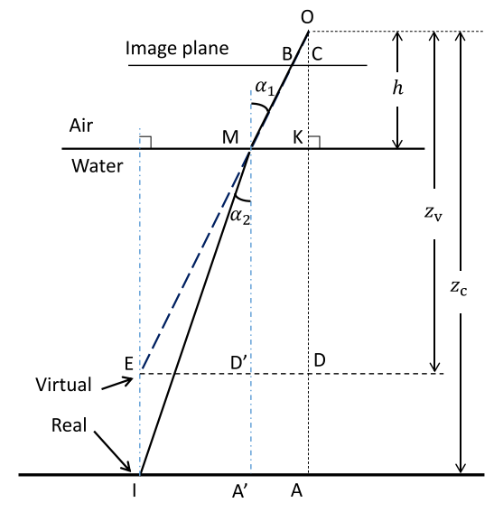

1. Refractive laser triangulation and photometric stereo in underwater environment
原文链接

相机处于防水外壳中。 相机的光轴垂直于外壳接口。
根据透视投影，可以将虚拟点设置为沿OM的延长线的任何位置。
为了简化计算，我们假设虚拟点在真实点的正上方，并且两个点的连接线垂直于外壳接口。
该模型的特征在于以下参数：
\(h\)：透视中心O与外壳接口之间的距离；
\(α_1\)：入射角；\(α_2\)：在水中的折射角；
\(I\)：真实物体点\((x_c，y_c，z_c)\)(在相机坐标系中)；
\(E\)：与点\(I\)相关的虚拟对象点\(\ (x_v，y_v，z_v)\)。
在此模型中，显然存在以下关系：\(x_c = x_v，y_c = y_v\)。
假设光轴，入射光线和折射光线都在同一平面上。
根据斯涅耳的折射定律，折射率n可以写成：
\[n = \frac{sin \alpha_1}{sin \alpha_2}\]
根据几何关系：
\[\begin{split}sin\alpha_1 = \frac{ED'}{ME}\\
sin\alpha_2 = \frac{IA'}{MI}\end{split}\]
在图中存在如下的几何关系:
\[ED = IA,ED' = IA',MD'=KD,MA'=KA, AA'=DD'=MK\]
因此折射率\(n\)可以写为
\[n = \frac{ED' \times MI}{IA' \times ME} = \frac{MI}{ME}\]
因为\(z_v = OD,z_c = OA\)，则可以由\(OA\)和\(OD\)的几何关系来估计“虚拟现实”关系，
他们有一个共同的因素\(\longrightarrow OK\)
\[\begin{split}OA = OK + KA\\
OD = OK + KD\end{split}\]
其中\(OK\)表示镜头玻璃距离\(h\)，下面找到\(KA\)和\(KD\)的几何关系
\[\begin{split}\begin{eqnarray}
KA &=& \sqrt{MI^2- IA'^2} \\
&=& \sqrt{n^2 \times ME^2 - IA'^2}\\
&=& \sqrt{n^2 \times (MD'^2 + ED'^2) - IA'^2}\\
&=& \sqrt{n^2 \times (KD^2 + IA'^2) - IA'^2}\\
&=& \sqrt{n^2 \times KD^2 + (n^2-1) \times IA'^2}
\end{eqnarray}\end{split}\]
又因为\(KD = OD - OK， IA' = IA - AA' = IA - MK\)，因此\(KA\)可以被表示为
\[KA = \sqrt{n^2 \times (OD - OK)^2 + (n^2 - 1) \times (IA - MK) ^ 2}\]
因此\(OA\)可以表示为
\[OA = OK + \sqrt{n^2 \times (OD - OK)^2 + (n^2 - 1) \times (IA - MK) ^ 2}\]
所以，\(z_v\)和\(z_c\)的关系可以表示为
\[z_c = h +\sqrt{n^2 \times (z_v - h)^2 + (n^2 - 1) \times (IA - MK) ^ 2}\]
基于透视相机模型，点\(I\)和\(E\)都与点\(B(x_u,x_v)\)有关(在归一化坐标系中)。它们之间的关系可以表示为：
\[\frac{BC}{OC} = \frac{MK}{OK} = \frac{ED}{OD}\]
\(BC\)表示了点\(B\) 到图像平面中心\(C\)的距离，并且在正交化图像坐标系中，\(OC\) = 1，在这个条件下，\(MK\)可以表示为
\[MK = \frac{BC \times OK}{OC} = \sqrt{x_u^2 + y_u^2} \times h\]
\(IA\)表示从点\(I\)到\(XY\)平面中心\(A\)的距离
\[IA = ED = \frac{BC \times OD}{OC} = \sqrt{x_u^2 + x_v^2} \times z_v\]
最后，结合以上等式，该折射模型中的“虚拟-真实”关系可以表示为：
\[\begin{split}\begin{cases}
x_c = x_v\\
y_c = y_v\\
z_c = h + (z_v - h) \times \sqrt{n ^ 2 + (n^2 - 1) \times (x_u^2 + y_u^2)}
\end{cases}
\\
where\quad x_v = z_v \times x_u, y_v = z_v \times y_u\end{split}\]